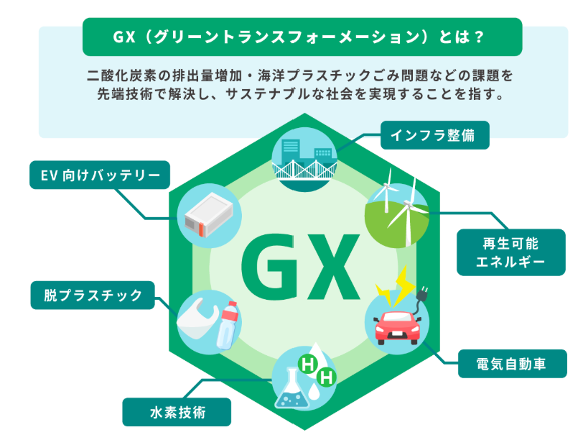

Energy Policy of Japan
Japan's energy policy is shaped by limited domestic natural resources and an isolated power grid. Its framework emphasizes technical innovation, supply-chain security, risk mitigation, and the balance among safety, energy security, economic efficiency, and environmental protection.
Core Policy Framework
Basic Act on Energy Policy: The guiding legal framework for Japan's energy strategy. It is built around the "3E+S" principle: Safety, Energy Security, Economic Efficiency, and Environmental Protection.
7th Basic Energy Plan: Reclassified nuclear power as a vital decarbonized baseload source after years of post-Fukushima caution. The plan allows reactor-lifespan extensions beyond the previous 60-year limit and supports development of next-generation safer reactors.
Act on Special Measures Concerning Renewable Energy: Shifted renewable-energy support from high Feed-in Tariffs (FIT) toward market-aligned Feed-in Premiums (FIP), pushing solar and wind producers to participate more directly in competitive power markets.
GX (Green Transformation) Promotion Act: Japan's master strategy for deep decarbonization. It authorizes 20 trillion yen in GX Economy Transition Bonds to stimulate private investment in next-generation nuclear reactors, hydrogen and ammonia co-firing, perovskite solar cells, and related clean-energy technologies, supported by a phased carbon-pricing system.
